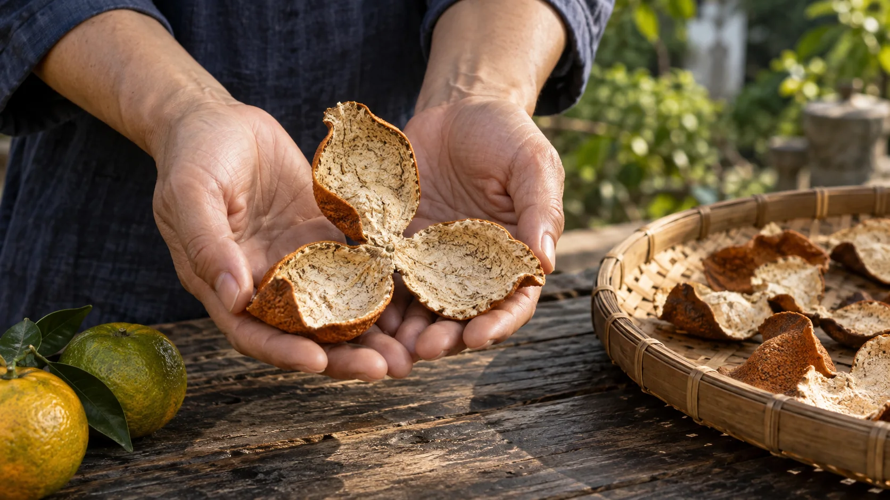

以资料为起点
查阅江门政府及相关部门发布的文化资料，提取建筑、街巷、水系与手艺的真实背景。来信、诗句与旁白为原创文学表达，文本模型辅助构思、文案与代码；故事页明确标注事实来源和原创感悟。
阅读依据：官方文化介绍与河湖资料BEHIND THE LETTER / 关于创作
一封当代来信，连接楼、街、水与味。
一次数字创作，让侨乡被看见，也被参与。
寻美江门 AIGC 原创文化作品 / 2026
互动网站 × 66 秒艺术短片
一座城市的美，也在人与故乡的关系里。《侨乡来信·江门》以一封写给故乡的当代来信为线索，把开平碉楼、赤坎骑楼、西江水岸与新会陈皮串成四个章节：楼的远望、街的回声、水的来信、味的归途。
阅读时，你可以收藏守望、相逢、相连、传承四枚文化印记。最后，把自己的文字写进明信片。来信由作品开始，也由每一位读者续写。
—— RTHLanStar

从资料到叙事，从画面到互动。
查阅江门政府及相关部门发布的文化资料，提取建筑、街巷、水系与手艺的真实背景。来信、诗句与旁白为原创文学表达，文本模型辅助构思、文案与代码；故事页明确标注事实来源和原创感悟。
阅读依据：官方文化介绍与河湖资料借助 ImageGen 独立生成九张摄影风格的 AI 艺术影像，以自然暖光、墨绿与纸色统一视觉。楼、街、水、味各有全景与细节，再以空白信笺串起开头和落款。短片通过 HyperFrames 编排十个镜头、缓慢推镜与柔和叠化，字幕随旁白分句出现。
九张独立 AI 原图 · 原生 1672 × 941 · 非实拍中文旁白保留已确认的 Microsoft zh-CN-YunjianNeural 男声。配乐《来信的回响》由 Python / NumPy 合成原创五声音阶旋律，并在说话时轻轻退后。纸张、檐雨、江水与晒篮摩擦的程序轻环境音，陪着停顿与呼吸出现。
原创程序配乐与声响设计 · 72 BPM · 非现场录音用静态 HTML、CSS 与 JavaScript 制作阅读和收藏互动。四章分别以碎片、窗扇、涟漪与陈皮开瓣回应主题。明信片在浏览器本地绘制，访客可以填写、保存与分享自己的心意。
个人文字与印记保存在当前浏览器，不上传把想象写清楚，把来处留下来。
本作品以诗意方式描画侨乡。摄影风格的 AI 艺术影像不对应具体建筑或传统工序的精确复原，画面中的双手不代表真实传承人。原创来信没有借用真实侨批、人物口述或历史档案的身份。
四枚印记是网页互动纪念。作品为独立创作，未获赛事官方背书。图像、文字、音频及交互的具体制作方式如上所列，并非所有环节均由生成式 AI 完成。
今日来信用一张风景和一句原创短诗带你认识下一站；“今天怎么逛”按时间与兴趣推荐现有路线，景点与美食卡片提供彼此的入口。“我的来信”新增旅行护照：自主标记去过、收集七区市私人邮戳，并保存旅行纪念卡。记录保存在当前浏览器，与四章文化印记及原明信片独立；不使用定位核验。
旅行指南整理七个区市的20项景点、14项美食和6条编辑路线，补充雨天、亲子与交通建议。事实介绍与行程建议分别标注；本轮扩充于2026年10月16日，具体出处见各条目的资料来源。
20项景点均配有对应实景照片，封面每次刷新随机切换。15张照片按所列开放许可使用；陈皮村入口图按罐头图库使用条件保留完整画面、水印与来源标注。陈少白故居、海口埠、歇马举人村、锦江温泉4张为官方公开配图，未见开放许可，来源清单如实记录。拍摄年份（有记录时）、作者及出处见图注。查看景点摄影来源 →
“吃什么”14项美食配有4张摄影与10张ImageGen菜式示意。摄影中的异地菜式参考和AI示意均在图注说明，不代表本站试吃或对应店铺实拍。查看美食配图来源 →
明信片使用访客填写的文字，或所选场景的推荐寄语，在本地绘制；生成时不调用联网大模型。
一封来信，不止一次抵达。
回到风景里，或从一张明信片开始。